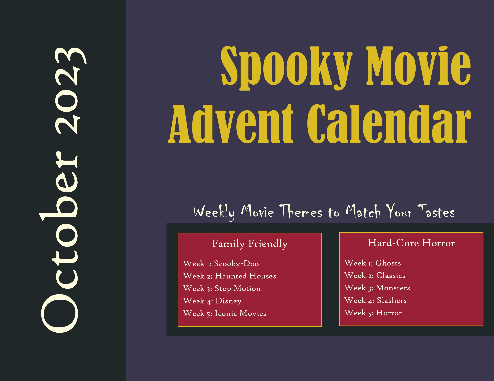
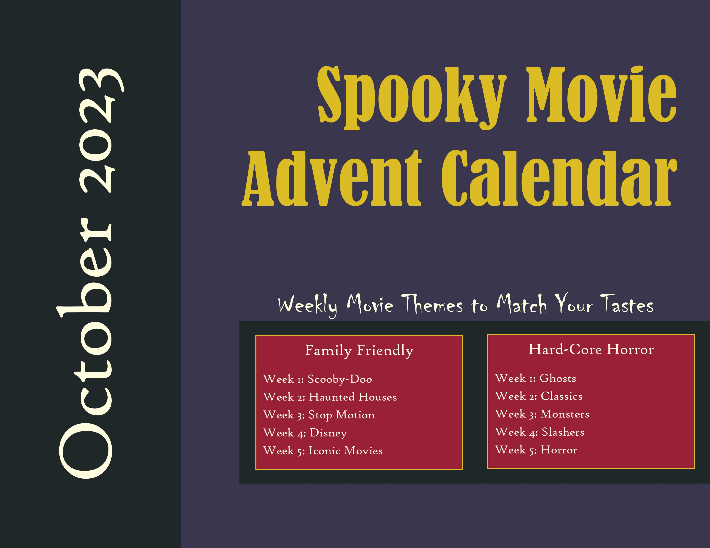

Portfolio
Photoshop
.png)


In Adobe Photoshop, I created a series of posters for my artisian sourdough company, Loafin' Around. After taking a LinkedIn Learning course to become certified in Photoshop, I chose company colors, created a logo, and took professional-grade photos of my products. This poster-series is my end product.
Illustrator


In Adobe Illustrator, I created a complete branding package for The Bird's Words, a freelance writing and editing company. After completing a course in LinkedIn Learning to become certified in Illustrator, I chose a color palette and fonts, and designed a series of logos, font samples, and stickers, and a social media strategy. These are a sample of my work.
InDesign
 


After becoming LinkedIn Learning certified in Adobe InDesign, I spent hours creating this October 2023 horror movie calendar with my team. We wrote movie descriptions, chose colors, gathered media, and even created an alternate calendar for those who don't enjoy scary movies, like me. InDesign was by far the most difficult Adobe software I have worked with, however, it was worth mastering for its value in text-related projects.
Dreamweaver
This portfolio site is a product of my profficiency in Dreamweaver. I learned basic HTML and CSS in LinkedIn Learning, and completed a Dreamweaver certification course, then I created this site to showcase my work.